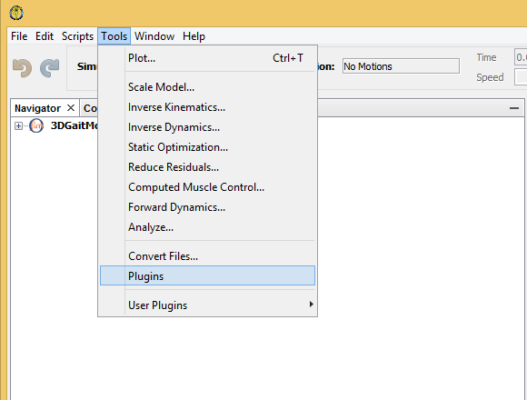
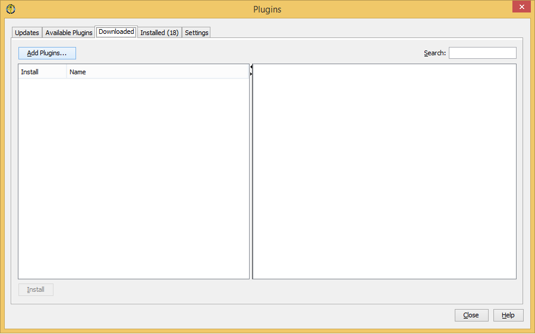
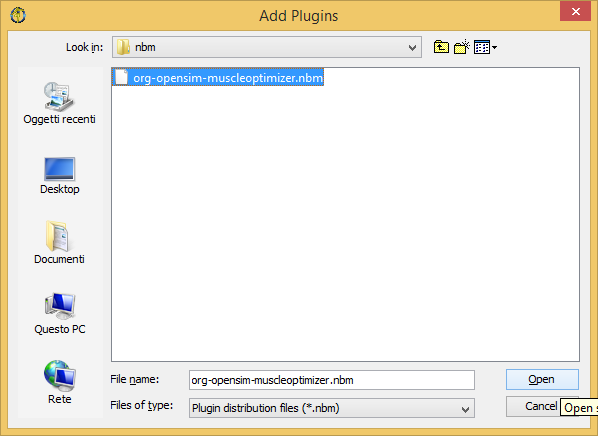
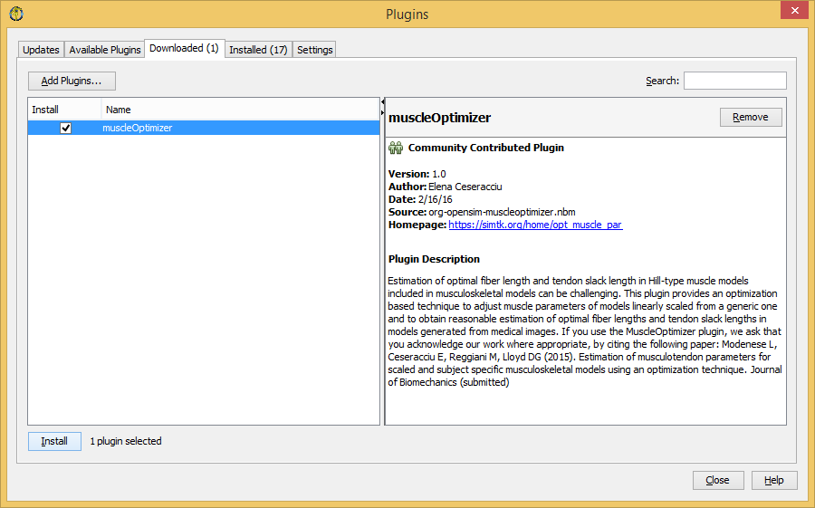
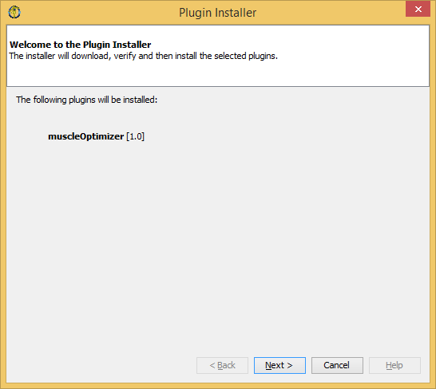
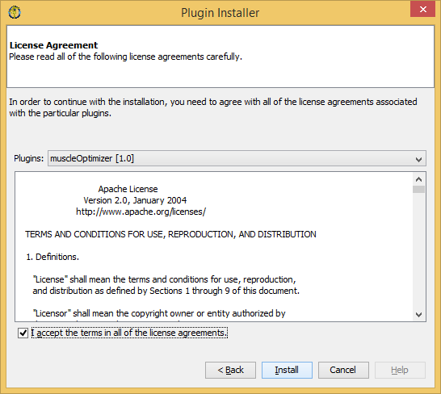
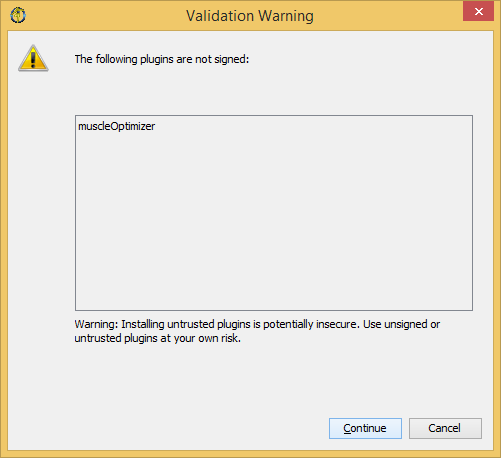
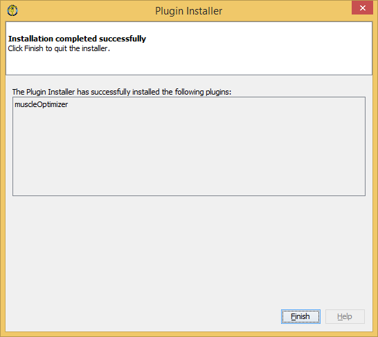

Muscle Optimizer installation instructions¶
The easiest way to use the Muscle Parameter Optimization software on Windows is to get an archive with pre-compiled files from https://simtk.org/home/opt_muscle_par. You need to have OpenSim 3.3 installed in your system. Make sure that you download an archive that is compatible with your OpenSim installation (i.e., 32 or 64 bit). If you want to use the standalone application on Linux, you need to compile from sources yourself; you can get the released source code from https://simtk.org/home/opt_muscle_par or the latest version from the GitHub page https://github.com/MuscleOptimizer/MuscleOptimizer .
Note
If you are only interested in the MatLab package, please refer directly to the MatLab toolbox section.
Preliminary step¶
If you wish to use the OpenSim GUI plugin or the standalone application, follow these steps:
- Unzip the provided archive
- Copy the
muscleOptimizeTool.dllfile from thebinfolder to a directory listed in thePATHenvironment variable of your machine (you might copy it to the plugins subfolder in your OpenSim installation folder, and add it to thePATHas OpenSim developers suggest)
Opensim GUI plugin (Windows only)¶
To use the OpenSim GUI plugin:
- Start OpenSim
- Open the Plugins Manager (
Tools -> Plugins)
- Go to the
Downloadedtab and click theAdd plugins...button
- Locate the nbm file

- Click the
Installbutton
- Click the
Nextbutton
- Read the license agreement, mark the “I accept the terms ...” checkbox, then click
Installbutton
- Click
Continueto install the plugin even if it is not digitally signed
- Wait for installation to complete; click the
Finishbutton, the close the Plugins window
- You should now find the
Map Muscles Operating Range...item in the Tools menu, belowScale Model...
Please refer to GUI plugin for OpenSim 3.3 for instructions on how to use the plugin.
Standalone application¶
If you want to use the standalone application, you can open a command prompt and move to the
bin directory that you extracted from the package archive. Alternatively, you can copy the
muscleOptimize.exe file from the bin folder to a directory that is listed in the
PATH environment variable for your machine.
Please refer to Muscle Optimizer standalone application for instructions on how to use the standalone application.